Windows Client Agent Installation
1. Prerequisite Check
Client Agent 자동 설치를 위해 해당 파일을 원하는 위치에 업로드 합니다.
-
설치 파일 위치 : manager 의
/home/sjmonv2user/sjmon_file/installer -
exe 파일을 통한 자동 설치 시
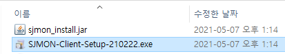 -
batch 파일을 통한 자동 설치 시
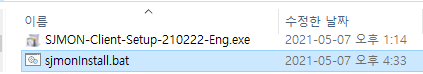
2. Auto Installation Program Upload & Installing the Agent Program
2.1) Agent Installation by Auto Installer
* exe 파일을 통한 자동 설치 시
업로드 된 위치에서 SJMON-Client-Setup-x.x.x.exe 파일을 실행합니다.
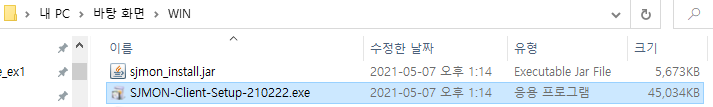
연결할 Manager의 정보를 입력합니다
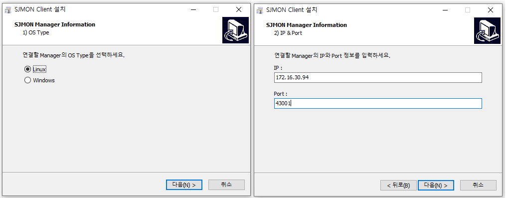
설치하고자 하는 위치를 선택하여 설치를 진행합니다.
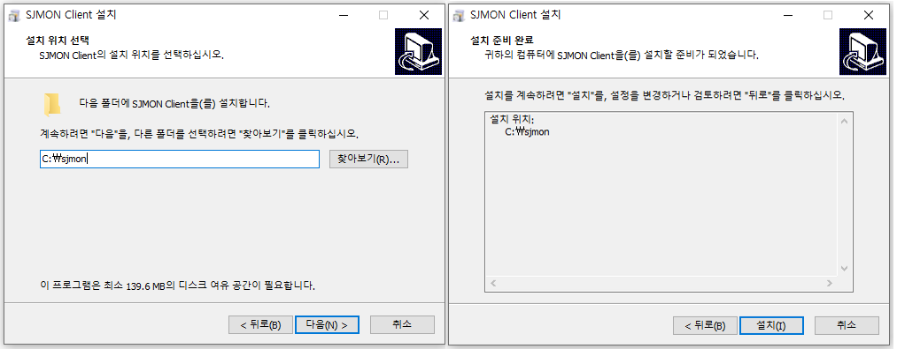
설치가 완료되면, 원하는 않는 옵션은 해제한 후 종료합니다.
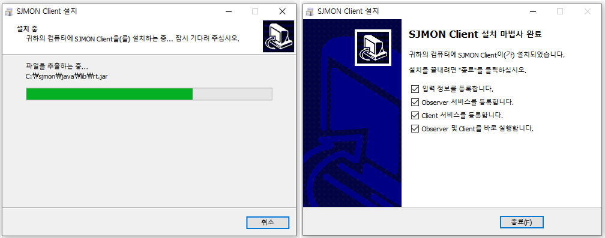
모든 설치가 완료되면, 선택한 위치에 관련 파일 확인 및 실행 가능합니다.
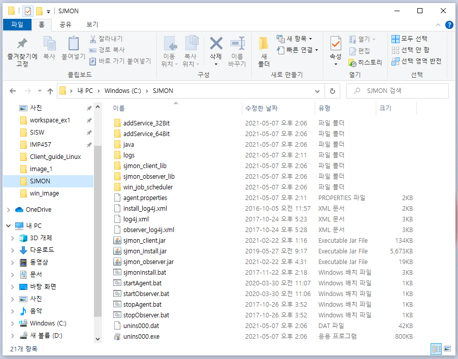
* batch 파일을 통한 자동 설치 시
Manager로부터 설치파일을 내려 받아 업로드 된 위치에서 sjmonInstall.bat 파일을 실행하면 자동으로 설치가 완료됩니다.
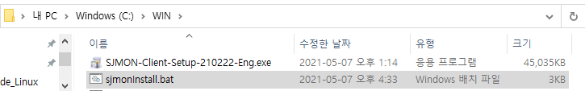
- 파일 위치 : manager 의
/home/sjmonv2user/sjmon_file/installer/(installer버전)
필요 파일명: install_log4j.xml / sjmon_install.jar / sjmonInstall.bat
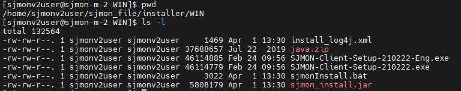
sjmonInstall.bat 파일 실행 전 JAVA의 위치를 체크하고 변경합니다
ex) "JAVA_HOME=C:\Program Files\Java\jdk1.8.0_211"
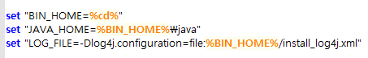
sjmonInstall.bat파일을 실행 시 sftp 또는 ftp를 사용, manager ip, 그리고 기본적으로는 43001 port를 사용해서 설치합니다.
sjmonInstall.bat sftp XXX.XXX.XXX.XXX 43001 sjmonv2user zaq12wsx 0
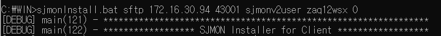
(포트는 manager설치 시 변경을 했다면 변경된 Port를 사용합니다)
2.2) Agent Installation by Manual Procedure
* 수동 설치 시
고객사 사정으로 Manager서버에 ftp나 sftp접속이 어렵고 exe 파일도 실행되지 않는 경우, Manager서버에 sjmonv2user로 접속한 뒤, Windows의 경우 all_files_WIN 디렉터리안으로 이동하여 해당하는 버전의 설치 파일들을 client의 Agent 디렉터리로 다운받습니다.
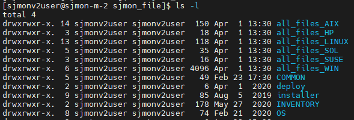
다운이 완료되면 addService_XXBit 폴더 안의 addServiceXX_observer.bat 파일과 addServiceXX_client.bat 을 실행하여 서비스로 등록합니다.
그 후 아래 파일을 수정합니다.
- agent.properties
| 설정 항목 | 설명 |
|---|---|
| agent.host | SJMON manager서버의 IP |
| agent.hport | SJMON manager와 연결되는 Port (default 43001) |
| agent.home | Agent가 설치된 경로 (ex. C:/sjmon) |
| agent.pipelocation | Agent의 pipe위치 (ex. \\.\pipe\nmonnamedpipe) |
| Agent.configlocation | Agent의 agent.properties(ex. C:/sjmon/agent.properties) |
서비스 등록 및 수정이 완료되면 startObserver.bat 파일을 실행하여 Agent를 구동합니다.
3. Agent program check
Window 관리 도구 -> 서비스에서 SjmonClient 실행을 확인 할 수 있습니다.
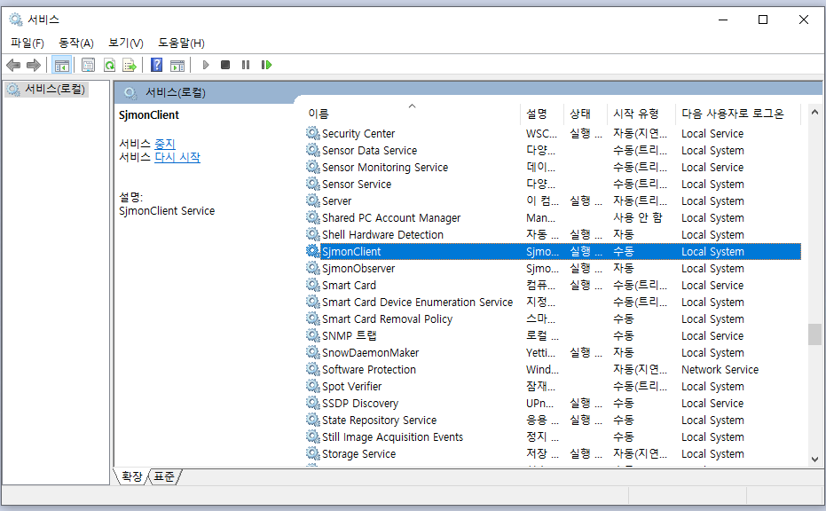
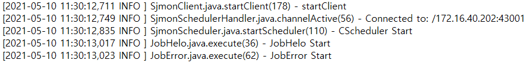
4. Agent Program Start & Stop
- start 방법
startObserver.bat을 실행합니다.
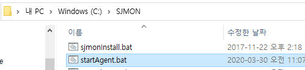
- stop 방법
stopAgent.bat을 실행합니다.
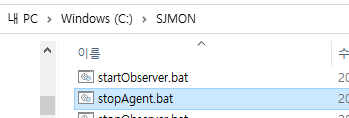